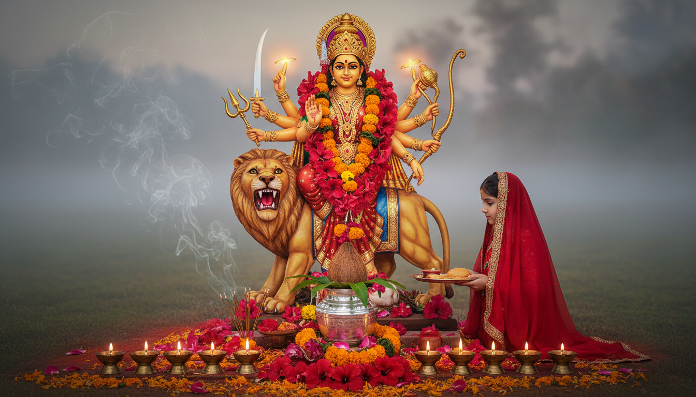

शारदीय नवरात्रि केवल एक अनुष्ठान नहीं, बल्कि ब्रह्मांडीय ऊर्जा 'शक्ति' के साथ स्वयं के गहरे एकात्म का उत्सव है। शरद ऋतु (Sharad Ritu) के आगमन के साथ, जब प्रकृति अपने पुराने स्वरूप को त्यागकर निर्मलता की ओर बढ़ती है, तब यह महापर्व हमारे भीतर भी एक 'आंतरिक यात्रा' (Inner Journey) का सूत्रपात करता है। आयुर्वेद के अनुसार, इस समय वातावरण में 'पित्त' (Pitta) का प्रकोप बढ़ता है, जिसे शांत करने के लिए नवरात्रि के उपवास एक वैज्ञानिक 'डिटॉक्स' की तरह कार्य करते हैं। यह नौ रातें तामसिक प्रवृत्तियों के दमन और सात्विक ऊर्जा के जागरण का मार्ग प्रशस्त करती हैं।

शारदीय नवरात्रि 2026: मुख्य तिथियां और खगोलीय महत्व
वर्ष 2026 में शारदीय नवरात्रि 11 अक्टूबर से प्रारंभ होकर 20 अक्टूबर तक मनाई जाएगी। इस वर्ष का कैलेंडर विशेष है क्योंकि तृतीया तिथि दो सूर्योदयों तक व्याप्त है, जिसके कारण यह पर्व 10 दिनों का होगा। यह अतिरिक्त दिन देवी की साधना और आध्यात्मिक शुद्धिकरण के लिए एक विशेष अवसर है।
- 11 अक्टूबर 2026 (रविवार): घटस्थापना एवं माँ शैलपुत्री पूजा।
- 13 अक्टूबर और 14 अक्टूबर: तृतीया तिथि की वृद्धि के कारण माँ चंद्रघंटा की विशेष उपासना।
- 18 अक्टूबर 2026 (रविवार): महा अष्टमी और माँ महागौरी पूजा।
- 19 अक्टूबर 2026 (सोमवार): महा नवमी और माँ सिद्धिदात्री पूजा।
- 20 अक्टूबर 2026 (मंगलवार): विजयादशमी (दशहरा) और नवरात्रि पारण।
संधि पूजा मुहूर्त (19 अक्टूबर 2026):
नवरात्रि का सबसे शक्तिशाली समय 'संधि काल' माना जाता है, जब अष्टमी समाप्त होती है और नवमी प्रारंभ होती है। इसी क्षण देवी दुर्गा ने 'चामुंडा' रूप धरकर चंड-मुंड का संहार किया था।
समय: सुबह 10:27 AM से 11:15 AM तक।
इस दौरान माँ को 108 कमल के फूल अर्पित करना और 108 दीपक जलाना जीवन के गहन अंधकार और अवरोधों को दूर करने वाला माना जाता है।
नौ देवियां: रंग, ग्रह और दिव्य आशीर्वाद
नवरात्रि के नौ स्वरूप नौ विशिष्ट ग्रहों का प्रतिनिधित्व करते हैं। इनकी आराधना से न केवल आध्यात्मिक लाभ मिलता है, बल्कि कुंडली के दोषों का भी शमन होता है।
| दिन | तिथि | माँ दुर्गा का स्वरूप | दिन का रंग | संबंधित ग्रह | विशेष भोग |
|---|---|---|---|---|---|
| 1 | 11 अक्टूबर | शैलपुत्री | नारंगी (Orange) | चंद्रमा | शुद्ध गाय का घी |
| 2 | 12 अक्टूबर | ब्रह्मचारिणी | सफेद (White) | मंगल | चीनी और फल |
| 3 | 13-14 अक्टूबर | चंद्रघंटा | लाल (Red) | शुक्र | दूध की मिठाई/खीर |
| 4 | 15 अक्टूबर | कूष्मांड | रॉयल ब्लू (Royal Blue) | सूर्य | मालपुआ और पेठा |
| 5 | 16 अक्टूबर | स्कंदमाता | पीला (Yellow) | बुध | केला |
| 6 | 17 अक्टूबर | कात्यायनी | हरा (Green) | बृहस्पति | शहद |
| 7 | 18 अक्टूबर | कालरात्रि | स्लेटी (Grey) | शनि | गुड़ और तिल |
| 8 | 19 अक्टूबर | महागौरी | बैंगनी (Purple) | राहु | नारियल |
| 9 | 20 अक्टूबर | सिद्धिदात्री | मयूर हरा (Peacock Green) | केतु | सूखे मेवे और घी |
महा अष्टमी और कन्या पूजन: परंपरा और विज्ञान
महा अष्टमी (19 अक्टूबर) के दिन कन्या पूजन का विधान है। तंत्र शास्त्र के अनुसार, 2 से 10 वर्ष की कन्याओं में 'निशकल शक्ति' (Nishkala Shakti) का वास होता है। यह वह शक्ति है जो अभी सांसारिक इच्छाओं या विकारों से अछूती और शुद्ध है। यौवन-पूर्व (Pre-puberty) कन्याओं की पूजा वास्तव में चेतना के उस निराकार और पवित्र स्वरूप की अर्चना है।
कन्याओं के नौ स्वरूप और आशीर्वाद
- कुमारिका (2 वर्ष): समृद्धि और दरिद्रता का नाश।
- त्रिमूर्ति (3 वर्ष): धर्म, अर्थ और काम की सिद्धि।
- कल्याणी (4 वर्ष): सुख और विजय।
- रोहिणी (5 वर्ष): आरोग्य और शक्ति।
- काली (6 वर्ष): शत्रुओं पर विजय और बाधा निवारण।
- चंडिका (7 वर्ष): ऐश्वर्य और भयमुक्ति।
- शांभवी (8 वर्ष): शांति और ज्ञान।
- दुर्गा (9 वर्ष): कठिन कार्यों में सफलता।
- सुभद्रा (10 वर्ष): सिद्धियों की पूर्णता।
प्रसाद का आयुर्वेद: हलवा, पूरी और काले चने
कन्या पूजन में दिए जाने वाले पारंपरिक प्रसाद का संयोजन स्वास्थ्य के दृष्टिकोण से पूर्ण है:
- सूजी का हलवा और घी: यह शरीर में 'ओजस' का निर्माण करता है और पाचन तंत्र को पोषण देता है।
- पूरी: गेहूं की शक्ति और कार्बोहाइड्रेट ऊर्जा प्रदान करते हैं।
- काले चने: ये आयरन और प्रोटीन से भरपूर होते हैं। आयुर्वेद के अनुसार, चने 'कफ' को शांत करने वाले होते हैं, जो ऋतु परिवर्तन के समय अत्यंत आवश्यक है।
कन्या पूजन की चरणबद्ध विधि
- स्वागत: कन्याओं के पैर धोकर उन्हें 'देवी स्वरूपा' मानकर आसन दें।
- तिलक व रक्षा: कुमकुम का तिलक लगाएं और कलाई पर 'मौली' (रक्षा सूत्र) बांधें।
- आरती: धूप-दीप से उनकी आरती उतारें, जिससे वातावरण की नकारात्मकता दूर हो।
- भोजन व दक्षिणा: श्रद्धापूर्वक सात्विक भोजन कराएं और लाल चुनरी, फल या दक्षिणा भेंट करें।
- आशीर्वाद: अंत में उनके चरण स्पर्श कर आशीर्वाद प्राप्त करें।
आयुर्वेद और उपवास: दोष (Dosha) के अनुसार नियम
उपवास केवल धार्मिक त्याग नहीं, बल्कि शरीर का कायाकल्प है। अपनी प्रकृति के अनुसार उपवास करने से 'आम' (Toxins) नष्ट होते हैं।
- वात (Vata): वात प्रकृति वालों को पूर्ण निराहार रहने से बचना चाहिए। उन्हें घी युक्त, सुपाच्य और गर्म भोजन (जैसे साबूदाना खिचड़ी) लेना चाहिए ताकि शरीर में रुक्षता न आए।
- पित्त (Pitta): इन्हें तरल पदार्थों जैसे नारियल पानी, छाछ और फलों के रस का अधिक सेवन करना चाहिए। अधिक समय तक भूखा रहना एसिडिटी बढ़ा सकता है।
- कफ (Kapha): कफ प्रधान लोग निर्जला या केवल गुनगुने पानी पर उपवास कर सकते हैं। इससे शरीर की सुस्ती दूर होती है।
उपवास की सामान्य गलतियां (Common Mistakes)
- अत्यधिक तले हुए पकवान (कुट्टू की पूरी, पकोड़े) खाना, जो पाचन पर भारी पड़ते हैं।
- सफेद चीनी का अधिक प्रयोग; इसके स्थान पर मिश्री या गुड़ का उपयोग करें।
- बहुत अधिक चाय या कॉफी पीना, जो शरीर को डिहाइड्रेट करती है।
- नमक में केवल सेंधा नमक का प्रयोग करें, क्योंकि यह शीतल और सात्विक होता है।
ज्योतिषीय उपाय और समाधान
नवरात्रि के दौरान ग्रहों के दोषों को संतुलित करने के लिए विशेष मंत्रों का जप संजीवनी की तरह कार्य करता है।
विवाह बाधा निवारण (माँ कात्यायनी मंत्र):
यदि विवाह में विलंब या अड़चनें आ रही हों, तो माँ कात्यायनी की पूजा करें और इस विशिष्ट मंत्र का जप करें:
"ॐ कात्यायनि महामाये महायोगिन्यधीश्वरी । नन्दगोपसुतं देवि पतिं मे कुरु ते नमः ॥"
नकारात्मकता और भय से मुक्ति (माँ कालरात्रि):
शनि ग्रह की पीड़ा और नकारात्मक ऊर्जा से सुरक्षा के लिए माँ कालरात्रि के समक्ष सरसों के तेल का दीपक जलाएं और उनके बीज मंत्र का जप करें।
- मानसिक शांति: चंद्रमा को मजबूत करने के लिए माँ शैलपुत्री को शुद्ध घी अर्पित करें।
- करियर और आत्मविश्वास: सूर्य की मजबूती के लिए माँ कूष्मांड को पेठे का भोग लगाएं।
निष्कर्ष: विजयादशमी का संदेश
नवरात्रि की यह दस दिवसीय यात्रा माँ शैलपुत्री के 'स्थायित्व' से शुरू होकर माँ सिद्धिदात्री की 'पूर्णता' तक पहुँचती है। विजयादशमी का पर्व हमें याद दिलाता है कि जब हम अपने भीतर की शक्ति को अनुशासित उपवास, मंत्र और करुणा (कन्या पूजन) से जाग्रत करते हैं, तो अधर्म और अहंकार रूपी रावण का अंत निश्चित है। आइए, इस नवरात्रि हम माँ दुर्गा के साहस और पवित्रता को अपने चरित्र में उतारें।
जय माता दी!
Sources
32. Ashvin (month) - Grokipedia)
- 9 Forms of Goddess Durga (Navdurga) – Meaning, Mantra & Puja ...
- 2026 Shardiya Navratri Calendar for Queens Village, New York, United States - Drik Panchang
- Durga Ashtami 2026: Date, Sandhi Puja Muhurat & Kanya Pujan Tips - Astro Zindagi
- The Nine Forms of Maa Durga and Their Astrology Connection ...
- Shardiya Navratri 2026: Dates, Worship of Nine Goddesses and Spiritual Meaning - ZODIAQ
- Navratri 2026: Day-to-Day Navratri Colours Guide with Correct Dates, Devi Names, and Significance - Vedantu
- Durga Saptashati: A glorious song to the Divine Mother - The Art of Living
- Navratri's Navrang: A Journey of Colours, Detox, & Well-being - Nadi Tarangini
- How to fast during Navratri as per your body type | The Art of Living India
- Kanya Puja 2026: Why We Feed Little Girls & the Science Behind It - Whispering Bharat
- 9 Forms of Goddess Durga in Navratri: Mantras, & Puja Essential Items - Astroyogi Store
- Durga Ashtami (Maha Ashtami) 2026: Date, Puja Vidhi, Mantra - Rudraksha Ratna
- Book Shri Durga Saptashati Path | Best Online Puja Service - Mangal Dosh
- Effect of Mata Durga Poojan on Our Natal Chart and Celestial Planets - PrayEveryday
- Kanya Pujan 2026: Muhurat, Vidhi & 7 Powerful Rules for Maximum Blessings on Navratri
- Navratri Remedies for Financial Stability in Vedic Astrology - AstroIndusoot
- Remedies for Navratre in Indian Astrology - Astroshastra
- Navratri and Navgraha - Amazing secrets of goddess worship - The Indian Panorama
- Astrological Meaning of Worshipping the Nine Forms of Durga - The Times of India
- Understanding Sharad Rutu According to Ayurveda
- Fasting During Navratri According to Ayurveda
- Sharad Ritucharya – Selfcare For Fall Season - KOTTAKKAL Ayurveda USA
- 2026 Ghatasthapana Date and Time during Shardiya Navratri for Santa Rita Village, Santa Rita, Guam - Drik Panchang
- 2026 Vijayadashami, Dasara, Dussehra Puja Date and Time for Birur, Karnataka, India
- 2026 Shami Puja | Sami Puja Date and Time for New Delhi, NCT, India - Drik Panchang
- 2026 Vijayadashami, Dasara, Dussehra Puja Date and Time for Nilokheri, Haryana, India
- 2026 Ghatasthapana Date and Time during Shardiya Navratri for Zuerich (Kreis 3), Zurich, Switzerland - Drik Panchang
- Durga Saptashati 2026: Meaning, How To Read it Daily & Benefits
- Siddh Samput Mantras of Durga Saptashati | PDF | Mythology - Scribd
- Siddha Mantras from Sri Durga Saptashati | Shri Devi Mahathmyam - WordPress.com
- Durga Saptashati Recitation Guide | PDF | Mantra | Polytheism - Scribd
- Aditya Hridaya Stotra in Hindi: आदित्य हृदय स्तोत्र पाठ हिंदी अर्थ सहित - 99 Pandit
- Chaitra Navratri 2026 Colours: Dates, Nine Colors of Navratri and Significance - MagicBricks
- Chaitra Navratri 2026: Dates, Colours, 9 Days & Simple Puja Guide - Diviniti gift items
- Ganga Dussehra: The regional customs, food, and family questions readers search for
- 2001 Ghatasthapana Date and Time during Dashain for New Delhi, NCT, India
- 1945 Ghatasthapana Date and Time during Shardiya Navratri for New Delhi, NCT, India
- Griha Pravesh Muhurat in 2026: Best & Most Auspicious Dates with Shubh Timings - MagicBricks
- Navratri 2026 Full Guide: 9 Days, 9 Goddesses, Colors, Rituals & Remedies
- Chaitra Navratri 2026 Colours: 9 colors for 9 days of Navratri and significance | - The Times of India
- Sharad Navratri 2026: Ghatasthapana & Nav Durga Worship — 11 October - Ishvaram
- Please guide me for durga saptashati path ( urgently) : r/hinduism - Reddit
- Ashtami and Navami Dates 2026 | Monthly Tithi, Fasting & Puja Timings
- Today's Hora Muhurat: Shubha Horai - AstroSage
- Siddh Samput Mantras of Durga Saptashati | PDF | Mythology - Scribd
- Chaitra Navratri 2026: 8 Remedies to Attract Wealth and Goddess Durga - Astroyogi Store
- Drik Panchang - online Hindu Almanac and Calendar with Planetary Ephemeris based on Vedic Astrology.
- Chaitra Navratri 2026 calendar: Start and end dates, colours for every 9 days and Maa Durga avatars to worship | Hindustan Times
- Sacred Rituals & Devotion of India by Dharmikvibes - Substack
- 0202 Shardiya Navratri Calendar for New Delhi, NCT, India
- Kannada Calendar 2024 Overview | PDF | Religious Holidays - Scribd
- Navratri Day 5: Know importance of Skanda mata, rituals, timings and more | India News
- Vidyarambh Muhurat 2026 — Auspicious Dates | KundliGPT
- Navratri 2022: Know all about the nine avatars of Maa Durga worshipped on each day of Navratri | Hindustan Times
- Ashtami Puja 2026: Check date, timings and shubh muhurat - India Today
- Maha Ashtami 2022: Know auspicious time to do Kanya Pujan, special muhurats forming on Ashtami, and Maha Navami tithi | Hindustan Times
- Navratri 2022: When is Maha Ashtami and Navami in Navratri? Know date, shubh muhurat, Parana time and other details | Hindustan Times
- Shilpa Shetty Kundra performs Kanchika Puja with her 'in-house Mahagauri'; know more about the ritual | Life-style News - The Indian Express
- Ganga Dussehra 2026 — The Day Maa Ganga Came Down to Bhagiratha | Sanskriti - Hinduism and Indian Culture Website
- Nirjala Ekadashi 2026: Date, timings, muhurat and astrological significance
- 2026 Holiday Calendar for CISF | PDF - Scribd
- Masik Durgashtami 2026: Dates, Puja Vidhi, Vrat Katha, Rituals & Significance - Sri Mandir
- Indian Festivals - ॐ Welcome to TirumalaHills
- Things to do in Pokhara in October - Wanderlog
- Aan Paavam Pollathathu Movie Download | PDF - Scribd
- October festivals: Dussehra and Diwali date to Karwa Chauth, check complete list
- Navratri 2023 Ghatasthapana: Rules, dos and don'ts, shubh muhurat, rituals and more for Day 1 of Shardiya Navratri | Hindustan Times
- Chaitra Navratri 2024: When is Ghatasthapana? Know the shubh muhurat for Kalash Sthapana, puja timing and rituals
- Navratri 2024: What are the nine forms of Maa Durga in Shardiya Navratri? | India News - Business Standard
- Chaitra Navratri 2020: Know about the first day of Navratri puja - India Today